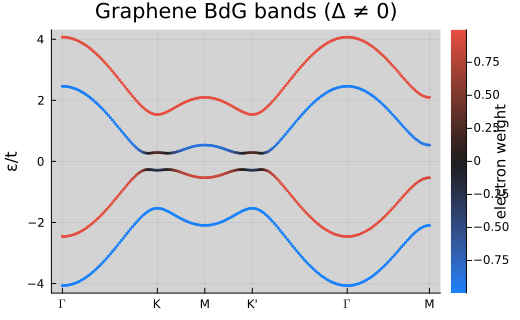

Tutorial 8 — Superconductivity (BdG)
Model spin-singlet superconductivity via self-consistent Bogoliubov–de Gennes (BdG) mean-field on a single-layer graphene lattice. This example mirrors the parameters from an interacting honeycomb study (onsite attraction with mild nearest‑neighbour interaction, slight doping), and plots quasiparticle bands with particle/hole branches and the pairing gap.
Learning goals
- Build a spinful graphene Hamiltonian and add a weak sublattice mass.
- Construct a BdG operator and an attractive onsite interaction for s‑wave pairing.
- Run a self-consistent BdG (Hartree–Fock) cycle at slight doping.
- Plot the BdG bands and inspect the gap opening.
Setup
Self-consistent BdG
ρ_sc, ϵ_GS, HF, converged, resid = Meanfield.solvehartreefock(
HBdG, V, ρ_init, filling; klin=klin, iterations=500, tol=1e-5,
T=0.001, β=0.75, show_trace=false
)
println("Converged: ", converged, ", residual = ", resid)Converged: true, residual = 8.726045221995295e-6# Extract the full BdG mean-field Hamiltonian and chemical potential
HBdG_mf = Meanfield.hMF(HF)
μ = HF.μ
occ = Spectrum.filling(HBdG_mf, μ; nk=klin)
println("μ = ", round(μ, digits=4), ", filling ≈ ", round(occ, digits=3))
size(HBdG_mf([0.0, 0.0]))(8, 8)Bands and pairing gap
figdir = joinpath(pwd(), "figures"); mkpath(figdir)
ks = kpath(lat; num_points=200) # Γ–K–M–Γ path
# Shift by chemical potential for plotting parity with legacy script
Operators.addchemicalpotential!(HBdG_mf, -μ)
# Colour by electron weight using an electron-sector projector function
eP = k -> Superconductivity.electron(HBdG_mf)(k)
bands_bdg = Spectrum.getbands(HBdG_mf, ks, eP)
# Plot symmetric window around zero to highlight particle/hole branches
p = plot(bands_bdg, 1; marker=:none, size=(520, 320),
ylabel="ε/t", title="Graphene BdG bands (Δ ≠ 0)",
colorbar=true, colorbar_title="electron weight")
savefig(p, joinpath(figdir, "graphene_bdg_bands.svg"))
nothing
Tip: Increase |U| or k‑point density for a larger/cleaner gap at the cost of runtime. To verify s‑wave symmetry, inspect the local pairing observable via Operators.localobservables(ρ_sc, lat).
Common pitfalls
- If self-consistency oscillates, reduce the mixing parameter (e.g.
β=0.5) or initialise with a uniform seed instead of a random one. - The sign convention for doping follows electron filling; values below 0.5 indicate electron doping in the spinful model.